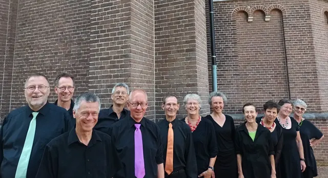

Nieuws ·
KLEINKOOR EEN VOOR TWAALF PRESENTEERT CONCERTREEKS ‘OVER DE EINDER

Verken de rijkdom van koormuziek met Kleinkoor Een voor Twaalf in hun aankomende concertreeks ‘Over de Einder’. Deze muzikale reis, geleid door de gastdirigent Luc Anthonis uit Antwerpen, biedt een diverse verzameling van koorwerken uit verschillende tijdperken. Het Nijmeegse koor belooft een boeiende ervaring waarin vragen, verlangens en het concept van het paradijs centraal staan.
De concertreeks, die plaatsvindt op 20 januari in Nijmegen en 21 januari in Overasselt, belicht een breed scala aan composities van componisten zoals Dusapin, Elgar, Glass, en anderen. Het thema van menselijke vergankelijkheid en de bijbehorende levensvragen vormen de rode draad in dit gevarieerde programma.
Een voor Twaalf, bekend om zijn unieke aanpak van twee projecten per jaar onder leiding van wisselende dirigenten, brengt twaalf ervaren zangers uit Nijmegen en omstreken samen. Zij bereiden zich zelfstandig voor op de muziek, waarna een gastdirigent de finale afwerking verzorgt.
Gastdirigent Luc Anthonis, met een indrukwekkende achtergrond in koordirectie, dwarsfluit, kamermuziek en harmonie, brengt zijn expertise naar deze concertreeks. Als dirigent van diverse koren, docent koordirectie en jurylid bij (inter)nationale koorwedstrijden, belooft Anthonis een verrijkende invulling te geven aan de concerten.
Een bijzonder intermezzo wordt verzorgd door het trio Melocorde. Met hun unieke instrumenten, waaronder de kemence, nyckelharpa en violone, nemen zij het publiek mee op een muzikale reis van oost naar west en van verleden naar heden.
De concerten vinden plaats in de Antonius Abt kerk in Nijmegen op zaterdag 20 januari om 20:00 uur en in Overasselt op zondag 21 januari om 15.30 uur. De entree is op basis van een vrijwillige bijdrage. Voor meer informatie, bezoek de websites www.eenvoortwaalf.nl en www.melocorde.nl.